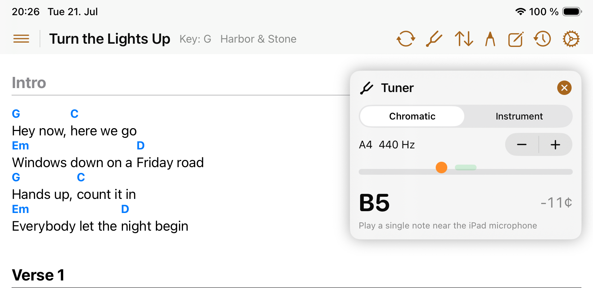
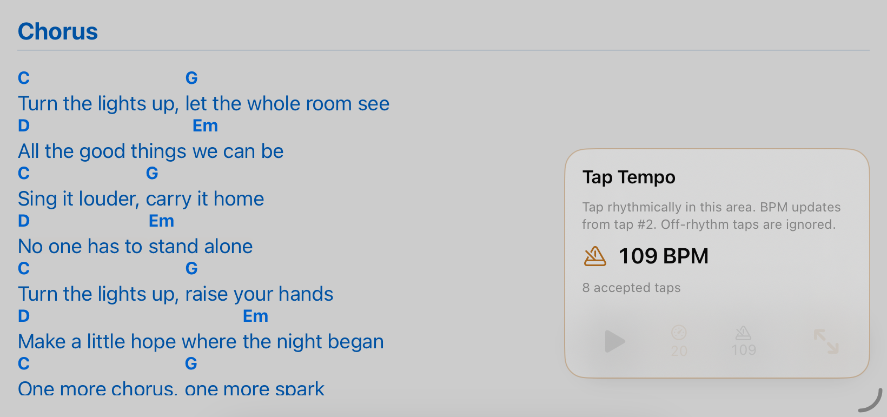

Stage tools
Tuner & Metronome
The tuner and metronome are quick performance tools you can open without leaving the song workflow.
Use the tuner
- Open a song.
- Choose the tuner action from the command bar (top right).
- Allow microphone access when asked.
- Play one note at a time and watch the pitch feedback.
- Close the tuner when you are ready to return to the chart.

Use the metronome
- Short tap starts or stops the metronome.
- Long press opens Tap Tempo.
- Tap repeatedly in the BPM area to set the tempo; tap outside it to close.
- Adjust metronome sound in Settings when another click tone is easier to hear.

Microphone privacy
The tuner uses microphone input only for pitch detection. Songivo does not record, store, or transmit tuner audio.